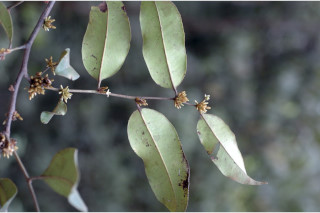
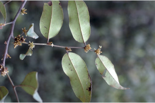
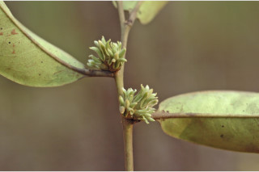
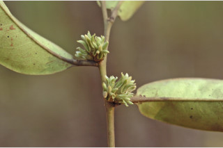
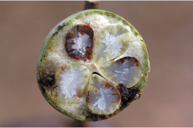
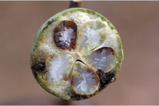

Trees up to 20 m tall.
20 ಮೀ ಎತ್ತರದವರೆಗೆ ಬೆಳೆಯುವ ಮರಗಳು.
20 മീറ്റര് വരെ ഉയരത്തില് വളരുന്ന മരങ്ങള്.
மரம் 20 மீ. உயரம் வரை வளரக்கூடியது.
Bark smooth, dark; blaze reddish.
ತೊಗಟೆ ಕಪ್ಪು ಬಣ್ಣದಲ್ಲಿದ್ದು ನಯವಾಗಿರುತ್ತದೆ;ಕಚ್ಚು ಮಾಡಿದ ಜಾಗ ಕೆಂಪಾಗಿರುತ್ತದೆ..
ഇരുണ്ടതും, മിനുസമാര്ന്നതുമായ പുറംതൊലി; വെട്ട്പാടിന് ചുവപ്പ് നിറം.
மரத்தின் பட்டை வழுவழுப்பானது, பட்டையின் உட்பகுதி சிகப்பு நிறமுடையது.
Branchlets terete, adpressed hairs when young.
ಕಿರುಕೊಂಬೆಗಳು ದುಂಡಾಗಿದ್ದು,ಎಳೆಯದಾಗಿದ್ದಾಗ ಅಪ್ಪು-ರೋಮಗಳಿಂದ ಕೂಡಿರುತ್ತವೆ;
ഉപശാഖകള് ഉരുണ്ടതും, ഇളതായിരിക്കുമ്പോള് ഒതുങ്ങിയിരിക്കുന്ന രോമങ്ങള് നിറഞ്ഞതുമാണ്.
சிறிய நுனிக்கிளைகள் குறுக்குவெட்டுத் தோற்றத்தில் வளையமானது, புதிய சிறுநுனிக்கிளைகளில் படிந்த உரோமங்களுடையது.
Leaves simple, alternate, distichous; petiole to 0.6-1.1 cm long, canaliculate, hairy when young, glabrous when mature; lamina to 6-18 x 3.5-7.5 cm, oblong to elliptic-oblong, apex gradually acuminate with blunt tip, sometimes obtuse, base acute to cuneate, margin entire, coriaceous, glabrous, drying brown; midrib canaliculate above; secondary_nerves 8-13 pairs, not prominent; tertiary_nerves obscure.
ಎಲೆಗಳು ಸರಳವಾಗಿದ್ದು ಪರ್ಯಾಯ ಹಾಗೂ ಸುತ್ತು ಜೋಡನಾ ವ್ಯವಸ್ಥೆ ಯಲ್ಲಿದ್ದು ಕಾಂಡದ ಎರಡೂ ಕಡೆಯ ಎದುರು ಬದರಿನ ಸಾಲಿನಲ್ಲಿರುತ್ತವೆ; ಎಲೆ ತೊಟ್ಟುಗಳು 0.6-1.1 ಸೆಂ.ಮೀ ಉದ್ದವಿದ್ದು, ಕಾಲುವೆ ಗೆರೆ ಸಮೇತವಿರುತ್ತವೆ, ಎಳೆಯದಾಗಿದ್ದಾಗ ರೋಮಸಹಿತವಾಗಿದ್ದು, ಬಲಿತಾಗ ರೋಮರಹಿತವಾಗಿರುತ್ತವೆ; ಪತ್ರಗಳು 6 - 18 X3.8 – 7.5 ಸೆಂ.ಮೀ. ಗಾತ್ರ, ಚತುರಸ್ರದಿಂದ ಅಂಡವೃತ್ತ-ಚತುರಸ್ರ ಆಕಾರ, ಮೊಂಡಾದ ಅಗ್ರವುಳ್ಳ ಕ್ರಮೇಣ ಚೂಪಾಗುವ ಅಥವಾ ಕೆಲವು ವೇಳೆ ಚೂಪಲ್ಲದ ತುದಿ, ಚೂಪಾದುದರಿಂದ ಬೆಣೆಯಾಕಾರದ ಬುಡ, ತೊಗಲನ್ನೋಲುವ, ಮೇಲ್ಮೈ, ನಯವಾದ ಅಂಚನ್ನು ಹೊಂದಿರುತ್ತವೆ ಹಾಗೂ ರೋಮರಹಿತವಾಗಿರುತ್ತವೆ; ಪತ್ರಗಳು ಒಣಗಿದಾಗ ಕಂದು ಬಣ್ಣ ಹೊಂದಿರುತ್ತವೆ; ಮಧ್ಯನಾಳ ಪತ್ರದ ಮೇಲ್ಭಾಗದಲ್ಲಿ ಕಾಲುವೆಗೆರೆ ಸಮೇತವಿರುತ್ತದೆಎರಡನೇ ದರ್ಜೆಯ ನಾಳಗಳು 8 – 13 ಜೋಡಿಗಳಿದ್ದು ಪ್ರಮುಖವಾಗಿರುವುದಿಲ್ಲ; ಮೂರನೇ ದರ್ಜೆಯ ನಾಳಗಳು ಅಸ್ಪಷ್ಟವಾಗಿರುತ್ತವೆ.
ലഘുവായ ഇലകള്, ഏകാന്തരമായി, തണ്ടിന്റെ രണ്ടുഭാഗത്ത് മാത്രമായി അടുക്കിയവിധത്തിലാണ്; ഇളതായിരിക്കുമ്പോള് രോമിലവും മൂക്കുമ്പോള് അരോമിലവുമായ, ഇലഞെട്ടിന് 0.6 സെ.മീ മുതല് 1.1. സെ.മീ വരെ നീളം; പത്രഫലകത്തിന് 6 സെ.മീ മുതല് 18 സെ.മീ വരെ നീളവും 3.5 സെ.മീ മുതല് 7.5 സെ.മീ വരെ വീതിയും, ആയതാകാരം തൊട്ട് ദീര്ഘവൃത്തീയ-ആയതാകാരംവരെയുമാണ്, മുനപ്പില്ലാത്ത അറ്റത്തോടുകൂടിയ ദീര്ഘാഗ്രമാണ്, ചിലപ്പോള് ഉപകോണാകാരത്തിലാണ്, പത്രാധാരം നിശിതം തൊട്ട് ആപ്പാകാരംവരെയാണ്, അവിഭജിതം, ചര്മ്മില പ്രകൃതം, അരോമിലം, ഉണങ്ങുമ്പോള് തവിട്ട് നിറമാണ്; മുഖ്യസിര മുകളില് ചാലോട് കൂടിയതാണ്; 8 മുതല് 13 വരെ ജോഡി ഏറെ വ്യക്തമല്ലാത്ത ദ്വിതീയ ഞരമ്പുകള്; ത്രിതീയ ഞരമ്പുകള് അപ്രസക്തമാണ്.
இலைகள் தனித்தவை, மாற்றுஅடுக்கமானவை, இருநெடுக்கு வரிசையிலையடுக்கம் (டைஸ்டிக்கஸ்); இலைக்காம்பு 0.6-1.1 செ.மீ. நீளமானது, குறுக்குவெட்டுத் தோற்றத்தில் கேனாலிகுலேட், புதிய இலைக்காம்பில் உரோமங்களுடையது மற்றும் முதிர்ந்தவற்றில் உரோமங்களற்றது; இலை அலகு 6-18 X 3.5-7.5 செ.மீ., நீள்சதுரம் முதல் நீள்வட்டம்-நீள்சதுரமுடையது, அலகின் நுனி படிப்படியாக குறுகி வால் போன்று நீண்டு மழுங்கிய முனை, சிலவற்றில் அலகின் நுனி பள்ளமானது, அலகின் தளம் கூரியது முதல் ஆப்பு வடிவம் கொண்டது, முழுமையான அலகின் விளிம்பு கொண்டது, கோரியேசியஸ், கீழ்பரப்பு உரோமங்களற்றது, உலர்ந்த இலை அரக்கு நிறமுடையது; மையநரம்பு மேற்புறத்தில் அலகின் பரப்பைவிட பள்ளமானது; இரண்டாம் நிலை நரம்புகள் 8-13 ஜோடிகள், தெளிவற்றவை; மூன்றாம் நிலை நரம்புகள் தெளிவற்றவை.
Flowers unisexual, dioecious; male flowers in axillary clusters on very short tubercles, silky tomentose; female flowers sessile, in axillary clusters.
ಹೂಗಳು ಏಕ ಲಿಂಗಿಗಳು; ಗಂಡು ಮತ್ತು ಹೆಣ್ಣು ಹೂಗಳು ಪ್ರತ್ಯೇಕ ಸಸ್ಯಗಳಲ್ಲಿರುತ್ತವೆ; ಗಂಡು ಹೂಗಳು ಅಕ್ಷಾಕಂಕುಳಿನಲ್ಲಿನ ಗುಚ್ಛಗಳಲ್ಲಿದ್ದು ಅತಿ ಸಣ್ಣದಾದ ಗುಬುಟುಗಳ ಮೇಲಿದ್ದು, ರೇಷ್ಮೆಯಂತಹ ದಟ್ಟ ಮೃದುತುಪ್ಪಳದಿಂದ ಕೂಡಿರುತ್ತವೆ;ಹೆಣ್ಣು ಹೂಗಳು ತೊಟ್ಟುರಹಿತವಾಗಿದ್ದು ಅಕ್ಷಾಕಂಕುಳಿನಲ್ಲಿನ ಗುಚ್ಛಗಳಲ್ಲಿರುತ್ತವೆ.
പൂക്കള് ഏകലിംഗികളാണ്, ഡയീഷ്യസും; സില്ക്ക്രോമങ്ങള് നിറഞ്ഞ ആണ്പൂക്കള്, കുറിയ, കക്ഷീയ മുഴപ്പുകളില് കൂട്ടമായുണ്ടാകുന്നു; അവൃന്തമായ പെണ്പൂക്കള്; കക്ഷങ്ങളില് കൂട്ടമായുണ്ടാകുന്നു.
ஓர்பால் மலர்கள், ஈரகம் கொண்டவை; ஆண்மலர்கள் இலைக்கோணங்களில் கொத்தாக கழலைகள் மீது காணப்படும், பட்டு போன்ற உரோமங்களுடையது; பெண்மலர்கள் காம்பற்றது, இலைக்கோணங்களில் கொத்தாக காணப்படும்.
Berry, globose, to 2.5 cm across, glabrous when mature; calyx_persistent, lobes reflexed with wavy margin; seeds 4.
ಬೆರ್ರಿಗಳು ಅಂದಾಜು 2.5 ಸೆಂ. ಮೀ. ವ್ಯಾಸ ಹೊಂದಿದ್ದು ಗೋಳಾಕಾರದಲ್ಲಿರುತ್ತವೆ ಹಾಗೂ ಬಲಿತಾಗ ರೋಮರಹಿತವಾಗಿರುತ್ತವೆ; ದೃಢವಾಗಿ ನಿಲ್ಲುವಪುಷ್ಪಪಾತ್ರೆ ಸಮೇತವಾಗಿರುತ್ತವೆ; ಪುಷ್ಪಪಾತ್ರೆಯ ದಳಗಳು ತರಂಗಿತ ಅಂಚು ಸಮೇತವಿದ್ದು ಹಿಂಚಾಚಿರುತ್ತವೆ.
4 വിത്തുകള് ഉള്ള കായ, മൂക്കുമ്പോള് അരോമിലമായ, 2.5 സെ.മീ വരെ കുറുകേയുളള, ഗോളാകാര ബെറിയാണ്; കായില് ഉറച്ചു നില്ക്കുന്ന ബാഹ്യദളങ്ങള്ക്ക് പിന്നാക്കംവളഞ്ഞതും, തരംഗിതമായ അരികുകളുളളതുമായ ഭാഗങ്ങളാണ്;
முழுச்சதைகனி (பெர்ரி) உருண்டையானது, 2.5 செ.மீ. குறுக்களவுடையது, முதிர்ந்தவற்றில் உரோமங்களற்றது, புல்லி இதழ்கள் நிரந்தரமானது, புல்லி இதழ்கள் வளைந்தது மற்றும் அலைப்போன்றது விளிம்புகளுடையது; விதைகள் 4.


 

 



 
